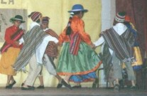

Las danzas nortinas tienen características notorias que se observan en las vestidas y se palpan en la música. No hay
diferencias marcadas entre un altiplánico de Argentina, Perú, o chile. en general, los bailes y danzas de la zona norte de
Chile se caracteriza por su origen religioso y festivo.
El cachimbo
Es, tal vez, el más tradicional y típico de los bailes nortinos, propio de Tarapacá, Pica y Mamiña. Es una danza festiva de pareja suelta, sin texto literario, donde intervienen principalmente "quenas" e instrumentos de bronce y de percusión.
El Carnavalito
Danza de origen boliviano y de la época relativamente reciente común en el norte argentino y bailada —también— en el norte de nuestro país. Se baila no solamente durante el Carnaval sino que es preferida en todas las fiestas del calendario, en las que se realizan bailes de conjunto. Su ritmo es binario y recuerda en los rasgueos agudos el instrumento típico denominado "charango".

Volver al Menu